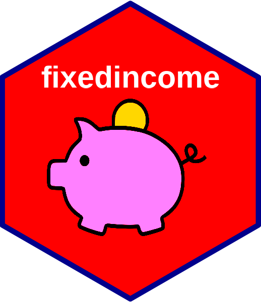
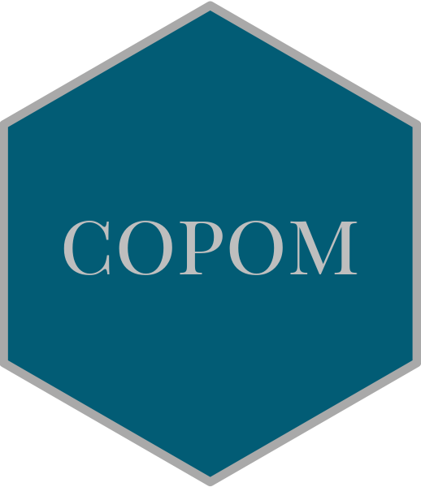
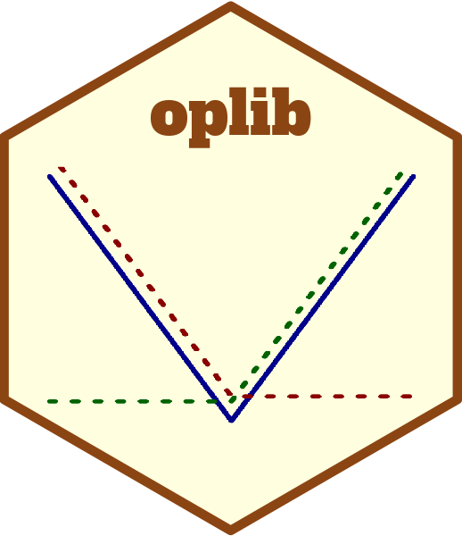
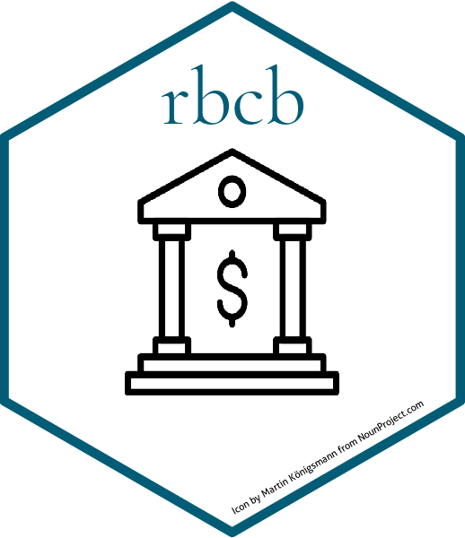
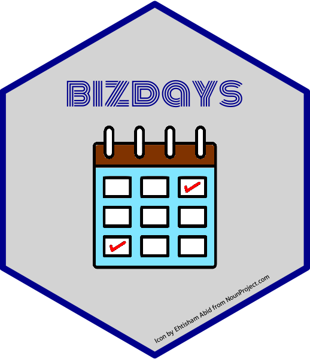

Projetos em R
Algumas das coisas que me fazem acordar cedo ou dormir tarde, de vez em quando.
rb3📦

Os arquivos disponibilizados no mercado financeiro brasileiro são da idade da pedra. Definitivamente não há um padrão, o que torna difícil o trabalho de quem faz análise de dados do mercado financeiro brasileiro. O pacote rb3, ataca este problema criando parsers para todos os arquivos divulgados pela B3. Estes arquivos contem informação de diversos contratos negociados na Bolsa, de onde é possível extrair diversos insumos para análise de negociação e gestão de risco.
fixedincome📦

fixedincome é um pacote para realizar cálculos de renda fixa. É bastante específico para quem trabalha com finanças. O objetivo é trabalhar com cálculos de envolvendo taxas de juros de forma estruturada e limpa.
copom📦

No Brasil, temos as reuniões do COPOM (Comitê de Política Monetária do Banco Central) onde os rumos da política monetária do pais são decididos. As decisões do COPOM, que determinam as taxas de juros de curto prazo, influenciam a dinâmica das curvas de juros. Dessa maneira, é possível extrair da curva de juros as expectativas de mercado das decisões do COPOM.
Algumas abordagens são implementadas no pacote copom.
oplib📦

oplib implementa diversos modelos de pricing para opções e cálculo de volatilidade implícita aplicados a opções de ações, índices, moedas e taxas de juros.
rbcb📦

rbcb é mais um pacote R na missão de estruturar os dados utilizados no mercado financeiro brasileiro, neste caso, dados publicados pelo Banco Central do Brasil (BCB) no seu portal de dados abertos. Este pacote baixa as séries divulgadas pelo BCB e disponibiliza em estruturas de dados no R.
bizdays📦

bizdays é um pacote para contagem de dias úteis. Foi originalmente escrito em R e depois foi portado para Python.
Hoje tem muito mais do que dias úteis:
- calcula dias úteis entre duas datas, de acordo com um calendário
- verifica se as data são dias úteis
- soma (subtrai) dias úteis a datas
- converte de dias úteis para dias corridos
e um pouquinho mais …
numbersBR📦
numbersBR é um pacote R para fazer validação dos diversos números de identificação existentes no Brasil, como: CPF, CNPJ, …
Estratégias de trading (Trading Strategies)
Fui monitor do cursos de Estratégias de Trading do Mestrado Profissional de Finanças Quantitativas da Faculdade de Economia da Fundação Getúlio Vargas.
Fiz um material bem legal nesse curso com apresentações e códigos em R que podem ser encontrados aqui.